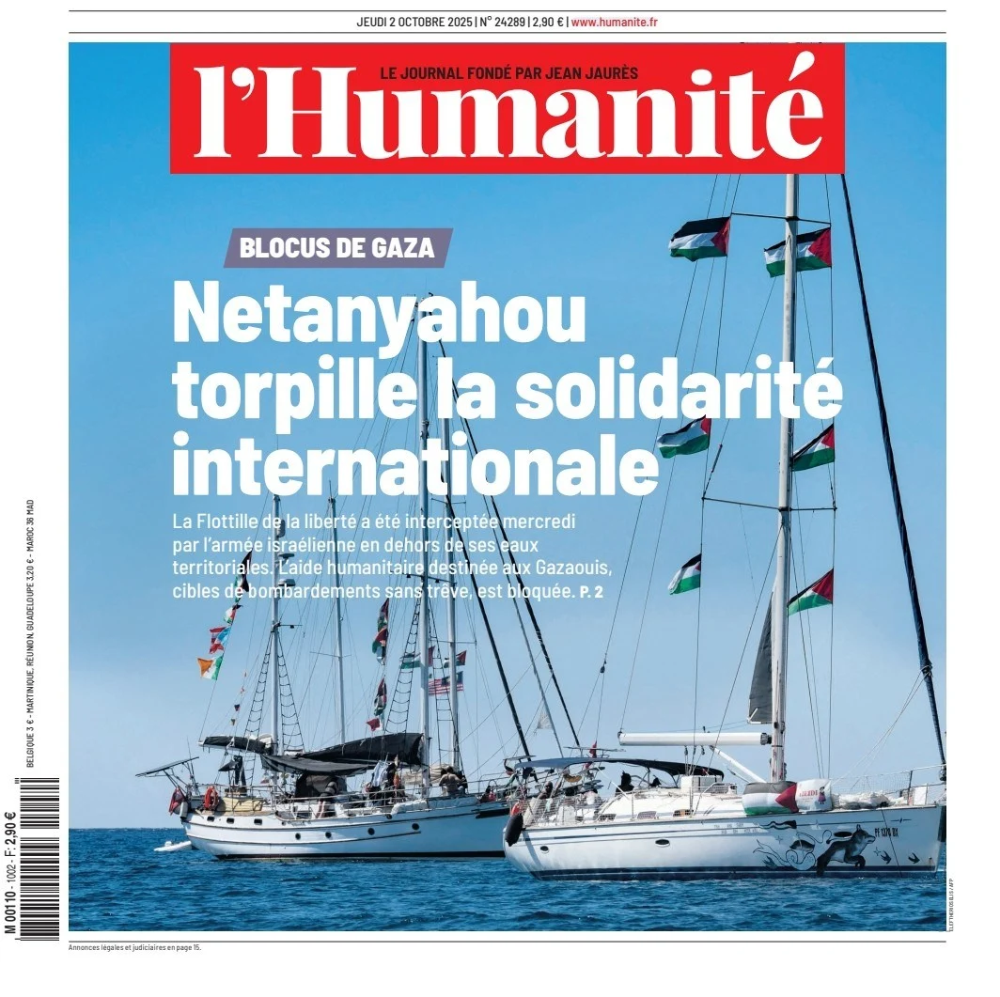

Prise de position
Flottille pour Gaza. Nous avons dénoncé l’arraisonnement des bateaux
Date indiquée par Facebook · 2 octobre 2025
Repères éditoriaux
Nous avons dénoncé l’arraisonnement des bateaux de la flottille pour Gaza par les autorités israéliennes et exprimé notre solidarité avec la mission humanitaire. L’Humanité en a fait sa une.
Texte conservé avec la publication
En arraisonnant les bateaux de la flottille pour Gaza, Israël piétine la solidarité et le droit international.
Les bateaux chargés d'aide humanitaire pour briser le blocus de la bande de Gaza ont été interceptés par l'armée israélienne en violation des conventions internationales.

Sources
Archive rouge · export Facebook · AR-0002-FB-00998
À lire aussi · Le PCF soutient les flottilles humanitaires pour Gaza